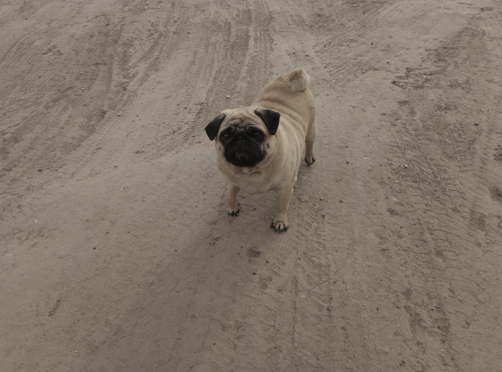
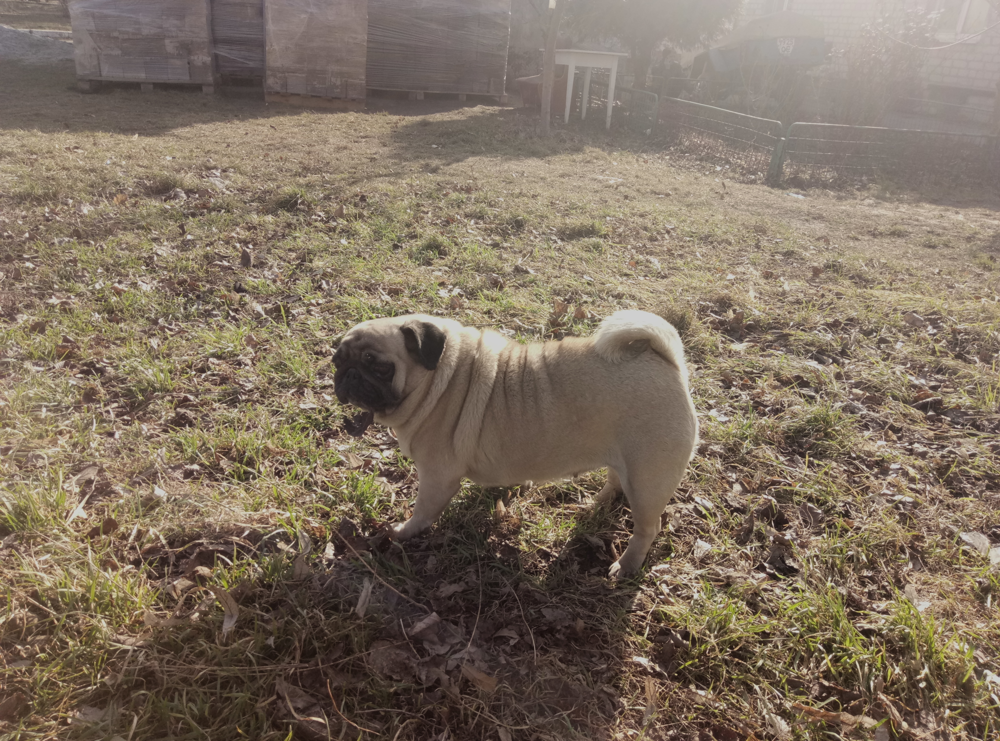
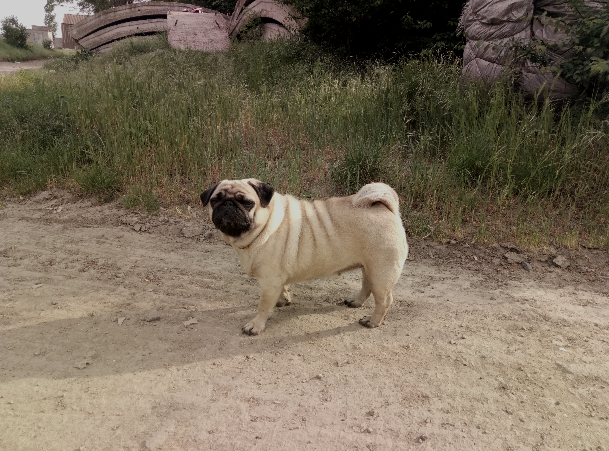
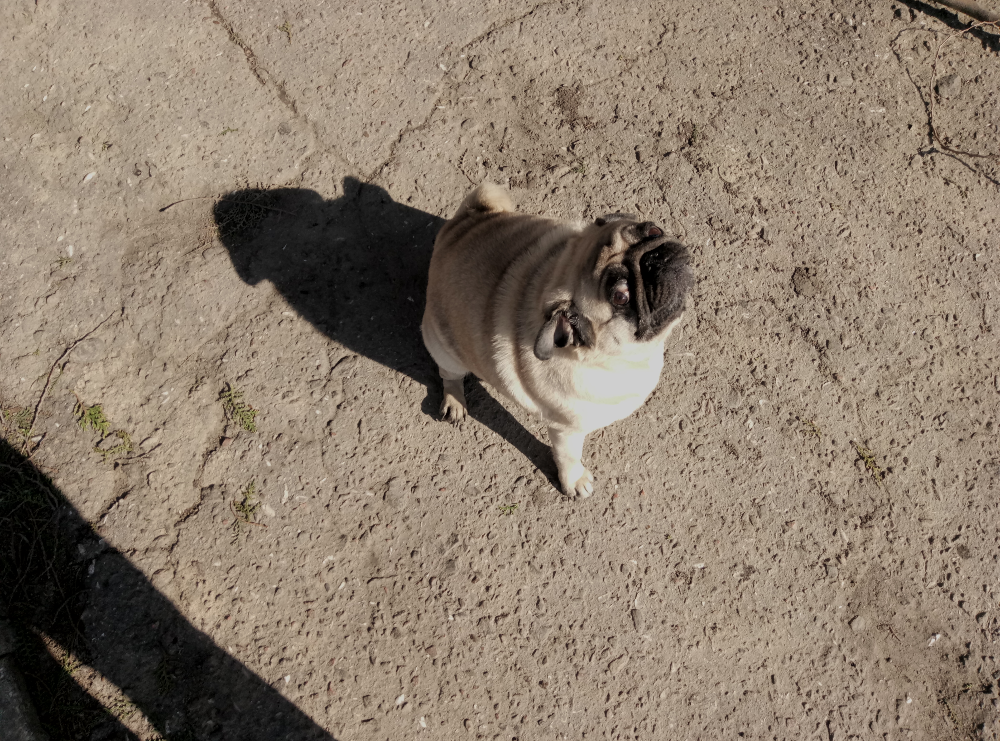

Цей текст відредагований за допомогою вбудованих стилів

Lilu was a pug with a light sandy coat and black ears and snout. She lived for 10 years. She had a calm temperament and got along well with people.
See more photos in the gallery


